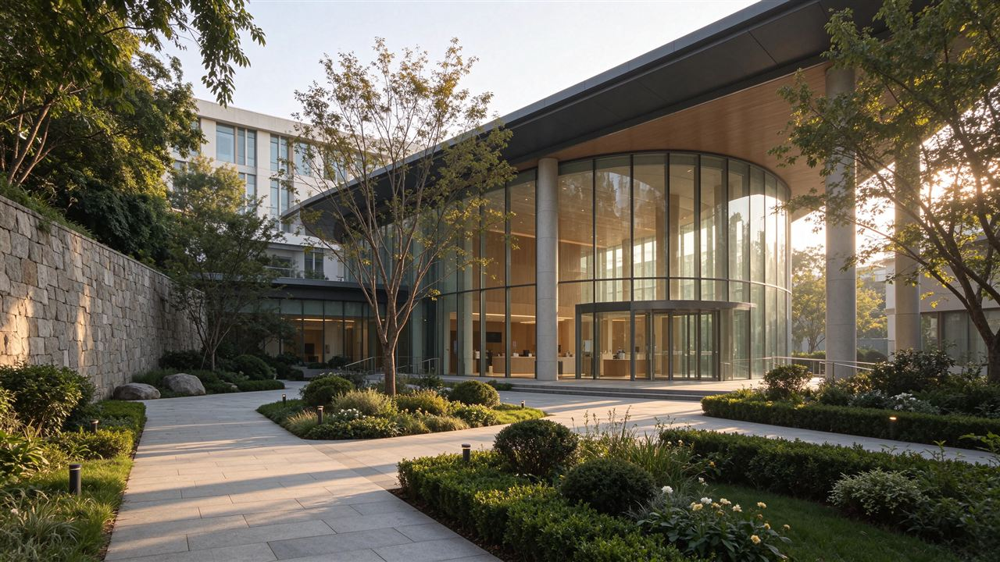

Welcome to the Vault
The Vault brings together everything needed for a confident move to Mexico City in one premium system — organized by stage, by persona and by situation, so you always know the next step.
Core guides included
The Arrival Companion and the Relocation Blueprint, full versions.
Persona playbooks
Remote worker, family, retiree, couple/solo — tailored priorities and budgets.
Month-by-month roadmap
From arrival week to a fully integrated, thriving daily life.
Neighborhood dossiers
Deep profiles with amenities, edges and who each colonia suits.
What you can expect
120-day access
Your Vault hub stays open for 120 days from purchase; open it in your Whop member area. No files are emailed or shipped.
English / Chinese
Toggle the page language anytime; every guide and template ships in both English and Chinese.
Instant digital delivery
A premium self-serve digital system with no shipping; access and technical issues are handled per Whop policy.
What's Included
Every asset in the Vault is digital and delivered instantly. No one-on-one consulting is included; the system is built to be self-serve and easy to follow.
CDMX Arrival Companion
First-72-hours playbook, eight neighborhood profiles, transport and money guides, food and daily life, safety and health, four Spanish audio phrase packs, budget planner and arrival checklist.
CDMX Relocation Blueprint
Six-module relocation course: fit assessment, visa and residency roadmap, housing hunt, daily setup, money and legal basics, first 90 days — with four spreadsheet templates.
Four Persona Playbooks
Tailored priorities, neighborhood picks, budget shape and watch-outs for remote workers, families, retirees and couples/solos.
12-Month Lifestyle Roadmap
Four phases: settle, deepen, integrate, thrive — with goals, milestones and review points for each quarter.
Culture & Hidden Gems
Markets, museums, parks, day trips and a festival calendar to build a social and cultural life, not just a residence.
Emergency Playbooks & Directory
Step-by-step responses for medical issues, theft or lost documents, earthquakes and transport incidents, plus a curated category directory.
Persona Playbooks
One size does not fit a move. Each playbook below focuses on the decisions that matter most for your situation.
Remote Worker
- Priority: reliable wifi, quiet workspace, café/coworking density, US-Central time alignment.
- Neighborhood picks: Roma Norte, Condesa, Juárez.
- Budget shape: rent and coworking dominate; eating out flexible.
- Watch-outs: verify included internet speed before signing; back up with a coworking day pass; keep video-call lighting and background in mind.
Family
- Priority: school proximity, quiet streets, parks, private healthcare, safety feel.
- Neighborhood picks: Polanco, Del Valle, Coyoacán, Condesa.
- Budget shape: school fees and larger housing; grocery and activities steady.
- Watch-outs: house-hunt school-first; map two daily routes before signing; confirm school admission deadlines and documents.
Retiree
- Priority: walkable daily services, healthcare access, calm, value for fixed income.
- Neighborhood picks: Coyoacán, Del Valle, Condesa, Narvarte.
- Budget shape: comfortable mid-range; health insurance weighted by age.
- Watch-outs: compare private insurance early; note altitude and walking slopes; identify nearby pharmacy clinic and hospital.
Couple / Solo
- Priority: social scene, food, nightlife within walking distance, easy exploration.
- Neighborhood picks: Roma Norte, Condesa, Juárez, Narvarte.
- Budget shape: flexible; dining and experiences are the main variable.
- Watch-outs: solo women apply extra caution at night on the metro and streets; build a local social routine in the first month.
12-Month Lifestyle Roadmap
A quarter-by-quarter path from arrival chaos to settled, integrated life. Audio summary walks through the phases.
Settle
Establish the basics
Connectivity, cash, transport card, housing signed, INM resident card processed, insurance active, nearest services mapped. Goal: daily life runs without constant translation or research.
Deepen
Learn the city beyond your colonia
Explore neighboring areas, build favorite regular spots, join a class, coworking or community group, test weekend trips outside the center. Review budget against actual spending and adjust housing or habits.
Integrate
Build local roots
Steady social circle, regular routines with neighbors and vendors, Spanish practice in real encounters, long-term services lined up (doctor, dentist, gym). Decide whether your housing still fits your settled life.
Thrive
Make it yours
Personalize the home, plan visits home or travel around the region, review residency renewal timing and long-term options, and mentor the habits that keep daily life calm and safe.
Neighborhood Dossiers
Eight profiles with character, amenities, edges and the residents each colonia suits. Rent figures are approximate furnished one-bedroom ranges, USD per month, 2026.
Roma Norte
The expat and creative epicenter: art-deco streets, cafés, galleries, mezcal bars and the densest international scene. Very walkable; rents and tourist pressure are the trade-off.
- Amenities: coworking, specialty coffee, international dining, metro access
- Edge: pricier; some streets feel visitor-facing
- Suits: first-timers, remote workers, social solos
Condesa
Leafy and residential around Parque México and Parque España; art-deco, dog-friendly, slightly calmer than Roma with a strong café culture.
- Amenities: parks, bakeries, design shops, quiet evenings
- Edge: rents match Roma; weekend nightlife spills over
- Suits: couples, families, walkability seekers
Polanco
The upscale embassy quarter: luxury retail, fine dining, polished quiet streets next to Chapultepec Park. The safest-feeling and most expensive option.
- Amenities: embassies, premium services, museums, malls
- Edge: very expensive; subdued nightlife
- Suits: executives, established expats, families
Juárez / Cuauhtémoc
Central and revitalizing beside Paseo de la Reforma; better value than Roma with good transit and a lively restaurant-bar strip near Zona Rosa.
- Amenities: Reforma corridor, metro, value eats
- Edge: quality varies block by block — inspect on site
- Suits: budget-aware central dwellers
Coyoacán
Village-like south: cobblestone plazas, colorful markets, Frida Kahlo's legacy, galleries and a strongly Mexican atmosphere. Lower rent, longer commute north.
- Amenities: markets, museums, cafes, greenery
- Edge: commute to central areas; fewer coworking spots
- Suits: families, retirees, culture-focused long-stayers
Del Valle
Steady middle-class residential: leafy streets, everyday services, quiet nights and one of the city's safest-feeling boroughs. Limited international flavor.
- Amenities: supermarkets, parks, local commerce
- Edge: fewer expat amenities and late-night options
- Suits: families, retirees, quiet-value seekers
Narvarte
A local favorite known for taquerías and authentic daily life; well served by metro and Metrobús, cheaper restaurants, less polished than the core.
- Amenities: food scene, transit, local markets
- Edge: more Spanish on the street; less curated
- Suits: value long-stayers, food lovers
Roma Sur
Roma's calmer, more residential neighbor; same easy access with a local texture and lower price. A sensible base for stays of a month or more.
- Amenities: neighborhood commerce, transit, nearby parks
- Edge: standard big-city street-level caution applies
- Suits: budget-conscious longer leases
Culture & Hidden Gems
A curated map of how to spend your free time like a resident — markets, museums, parks, day trips and the calendar that anchors local life.
Markets & food halls
- Mercado de Medellín (Roma) — produce, spices, food stalls
- Mercado de Coyoacán — crafts, fruit, street food
- Local mercados in every colonia for weekly groceries
Museums & art
- Museo Nacional de Antropología (Chapultepec)
- Museo Frida Kahlo (Coyoacán, book ahead)
- Mural route in the historic center; Roma galleries
Parks & outdoors
- Chapultepec — lakes, forests, museums
- Parque México / Parque España (Condesa)
- Street cafés and bike routes across the central colonias
Day trips & seasons
| Interest | Ideas within reach |
|---|---|
| History & archaeology | Teotihuacan pyramids (day trip, morning start recommended) |
| Towns & crafts | Coyoacán and San Ángel on foot; markets and weekend art fairs |
| Climate escape | Hill towns and green spaces outside the city on hot smog days |
| Festival calendar | Independence Day (Sept), Día de Muertos (Oct–Nov), Guadalupe (Dec), major carnival dates — check local listings each year |
Emergency Playbooks
Keep these sections bookmarked before you need them. Each playbook gives the order of operations in a stressful moment.

Medical issue
- Minor: pharmacy consultorio (Farmacias del Ahorro / Guadalajara / Similares), walk-in, ~50–100 MXN.
- Urgent: go to a private hospital emergency department — ABC, Ángeles, Médica Sur.
- Critical: call 911 for ambulance; have insurance policy number and blood type saved offline.
- Bring passport/resident card; keep policy documents accessible.
Theft / lost documents
- Safe first: move to a busy, lit location; do not chase anyone.
- Report: file a report at the nearest Ministerio Público / fiscalía; needed for insurance and card replacement.
- Documents: contact your embassy/consulate for passport replacement; keep digital copies ready.
- Cards: freeze bank and ride-app cards immediately from another device.
Earthquake
- On the early-warning alert: drop, cover, hold on; stay away from windows and tall furniture.
- After shaking stops: check yourself and others for injury, then gas, water and electric lines.
- Keep footwear near the bed; identify the safest spot in each room on day one.
- Expect phone networks to be busy; agree an offline meeting point with household members.
Transport incident
- In a ride app: share the trip live with a contact; save driver and vehicle details.
- If feeling unsafe: ask the driver to stop at a busy, lit location; call 911 if needed.
- After any incident: screenshot records, note time and location, report through the app and authorities.
- Never accept a street-hailed taxi; use authorized booth taxis or apps only.
Curated Directory
Categories to know when you arrive. Verify current locations, hours and coverage before relying on any listing; this directory is an orientation map, not an endorsement.
| Category | What to look for |
|---|---|
| Private hospitals | Hospital ABC (Observatorio / Santa Fe), Hospital Ángeles (multiple locations), Médica Sur (Tlalpan) |
| Pharmacy chains | Farmacias del Ahorro, Farmacias Guadalajara, Farmacias Similares — many with walk-in consultorios |
| Ride apps | Uber, DiDi, Cabify; DiDi often runs 10–20% below Uber |
| Telecom | Telcel, AT&T Mexico — prepaid SIM at OXXO; compare eSIM options before landing |
| Groceries | Superama, Wal-Mart, Chedraui; local mercados for produce; Rappi for delivery |
| Coworking | Central Roma/Condesa/Juárez spaces; compare day passes and monthly desks before committing |
| Consular | Locate your own embassy or consulate contact and registration procedure before arrival |
Master Template Vault
All relocation spreadsheets in one place, plus two Vault-only templates for persona budgeting and emergency contacts. English and Chinese versions of each file are included.
Persona Budget Planner · Vault exclusive
Pre-structured budget by persona: remote worker, family, retiree, couple/solo.
Emergency Contacts Card · Vault exclusive
Fill in local emergency numbers, embassy, insurer, landlord and clinic contacts to keep offline.
Document Checklist
Track identity, visa, civil documents, apostilles, translations and copies.
Relocation Timeline
Stage-by-stage tasks from six months out to settled-in.
Budget Tracker
Estimated vs actual monthly costs across all categories.
Rental Comparison
Score three listings side by side on location, price, transit and terms.
Each template above includes both English and Chinese versions.